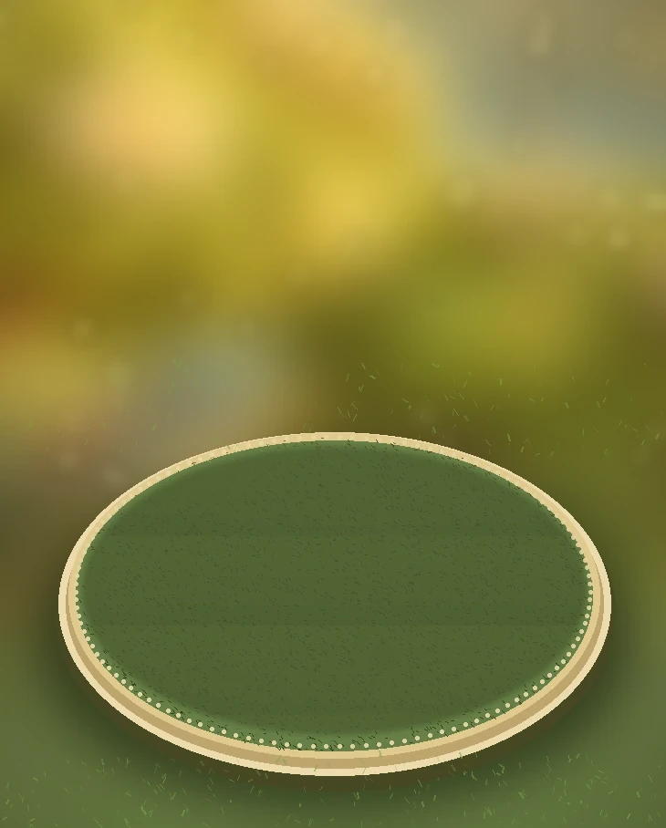

🐰
КроликПервый житель полянки
Готов ✓
Кролик обживается на своей полянке. Интересно, что здесь появится?
 Мир на ниточке
Проект: Цветок для полянки
Волшебное колечко
Мир на ниточке
Проект: Цветок для полянки
Волшебное колечко

Закрытые проекты показаны для будущих версий. Пока можно создать цветок, а потом вернуться на полянку и увидеть, что изменилось.
Пять созданных вещей превращаются в живую композицию. Следующие лоскуты соединятся тропинками — и персонажи смогут навещать друг друга.
Соседняя полянка появится в следующем выпуске. Сейчас доступен первый набор из пяти проектов.